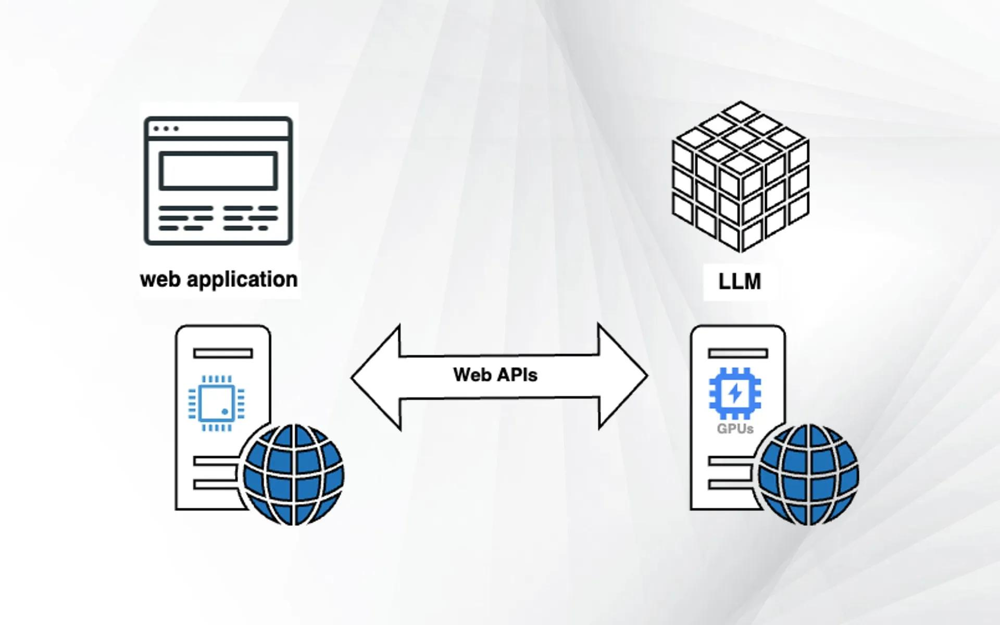

Интеграция LLM в веб-приложения

LLM (GPT-4, Claude, Gemini, Llama) можно встроить в веб-приложение для создания чат-ботов, анализа текста, генерации контента и интеллектуального поиска.
Основные способы интеграции
Vercel AI SDK
Библиотека для React, Svelte, Vue с поддержкой стриминга и абстракцией над провайдерами.
- Стриминг ответов
- Хуки useChat, useCompletion
- Поддержка Edge Functions
LangChain.js
Фреймворк для сложных LLM-приложений с цепочками, агентами и векторными БД.
- Цепочки и агенты
- Интеграция с Pinecone, Weaviate
- Модули памяти
Ollama
Локальный запуск open-source LLM без облака. Поддерживает Llama, Mistral, Gemma.
- Полностью локально
- REST API
- GPU-ускорение
Сравнение подходов
| Подход | Сложность | Гибкость | Стриминг | Локальный запуск |
|---|---|---|---|---|
| Vercel AI SDK | Низкая | Средняя | Да | Нет |
| LangChain.js | Высокая | Очень высокая | Да | Частично |
| Ollama | Средняя | Высокая | Да | Да |
| Прямой API | Низкая | Низкая | Вручную | Нет |
RAG: ключевой паттерн
- Индексация: документы → эмбеддинги → векторная БД.
- Поиск: запрос → эмбеддинг → ближайшие чанки.
- Генерация: чанки + запрос → ответ LLM.
Примеры применения
- Чат-боты поддержки
- Генерация контента
- Анализ обратной связи
- Умный поиск
- Персонализация